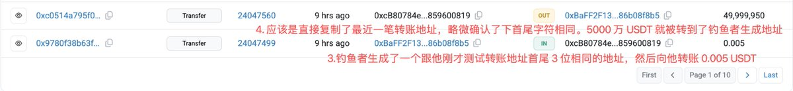
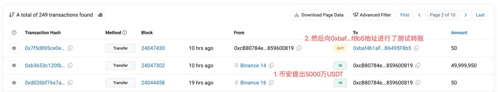

寒涟漪
@HANLIANYI331
小心小心再小心，加密货币转账可不比银行转账，银行转账还可以溯源资金流向，有一定概率追回资金，但是加密货币一旦转错几乎再无追回可能性。


余烬
@EmberCN
你们转账千万别再直接从最近一笔交易里复制地址进行转账了...今天又一个深刻教训：一个巨鲸/机构被相似地址钓鱼损失 5000 万 USDT...
1⃣10 小时前，他从币安提出 5000 万 USDT，然后向他计划转账的地址测试转账了 50 USDT。
2⃣重点来了：钓鱼者生成了一个首尾 3 位相同的地址向他转账了 0.005 https://t.co/bwKQ76lg57